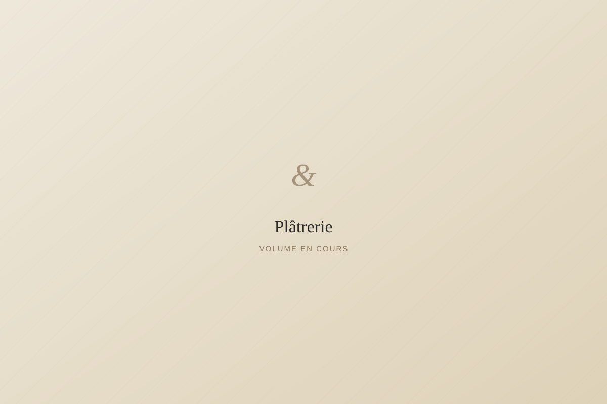
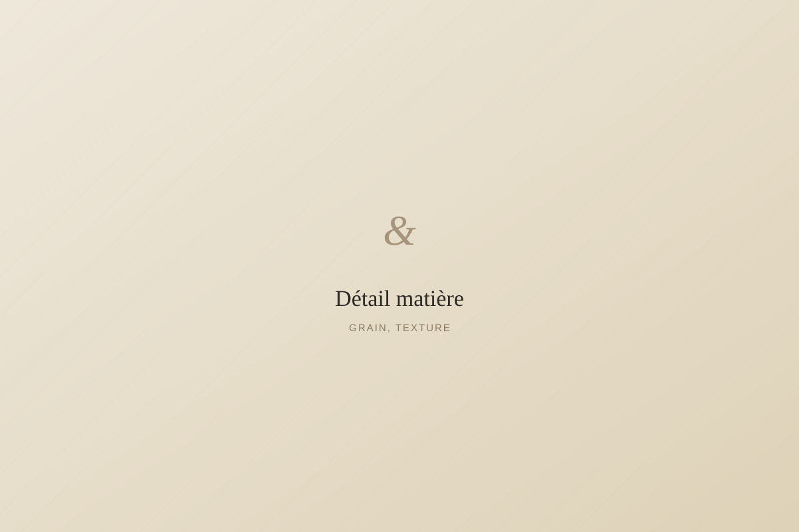
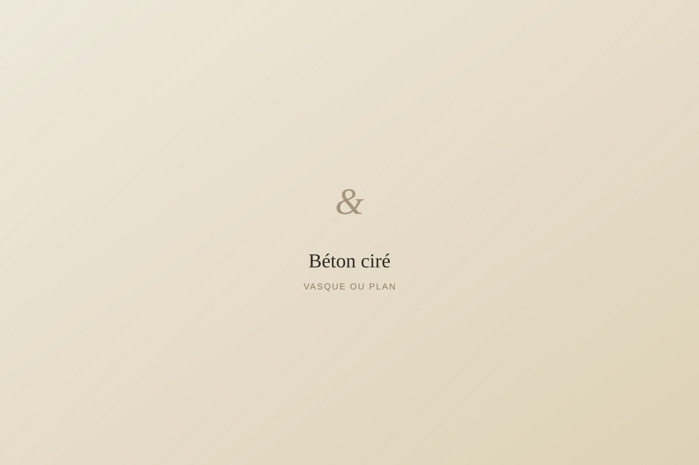
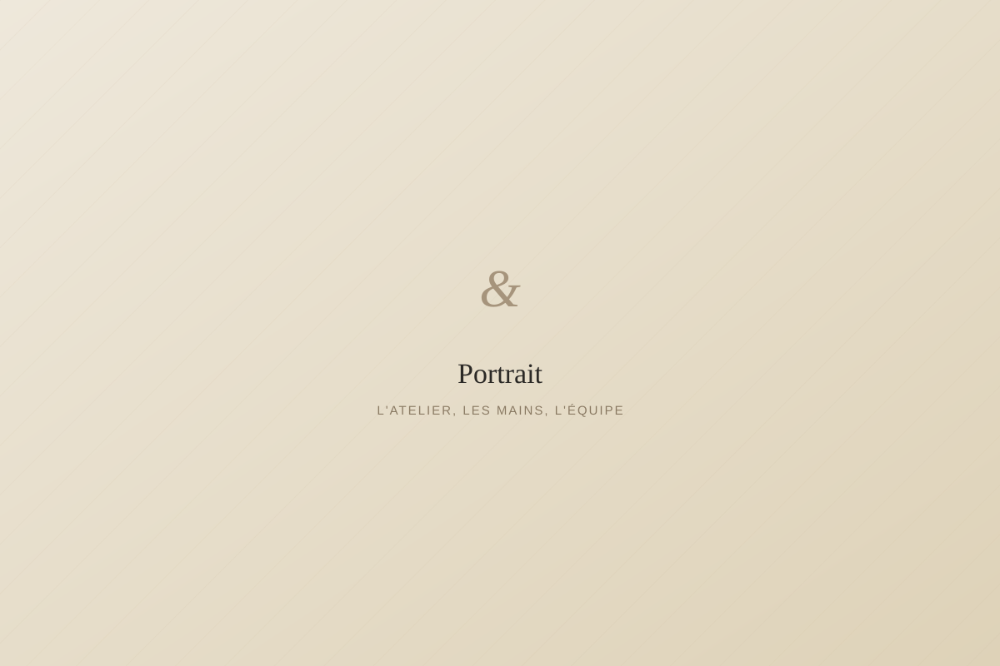
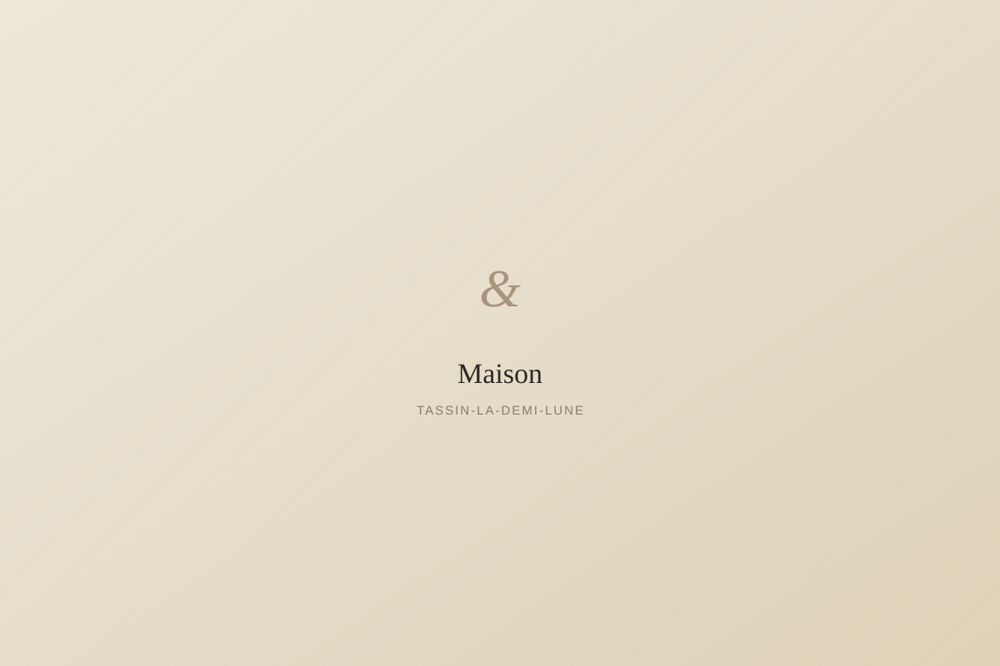
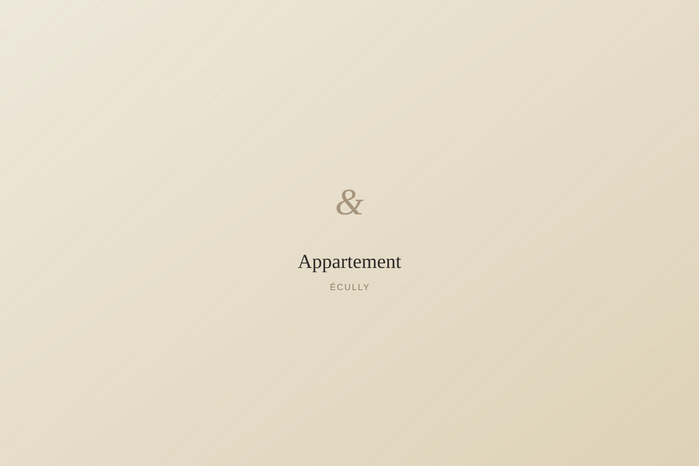

Plâtrerie — le volume
Cloisons, plafonds, courbes et reprise de support. Des bases solides pour révéler tout le caractère de votre intérieur

Plâtrerie, peinture et béton ciré haut de gamme. Des intérieurs préparés avec rigueur, finis avec précision.

Cloisons, plafonds, courbes et reprise de support. Des bases solides pour révéler tout le caractère de votre intérieur
Teintes profondes, finitions mates, velours, satinées ou laquées. Chaque surface est travaillée avec précision pour révéler toute la beauté de votre intérieur.

Murs, sols, salles de bains et mobilier. Une matière minérale et intemporelle qui habille vos espaces avec élégance et caractère.
Une visite, vos usages, la lumière de chaque pièce. Nous commençons par comprendre.
Teintes, matières, finitions : des propositions précises, essayées sur vos murs.
Préparation méticuleuse, protection totale, exécution soignée. Un chantier propre, chaque soir.
Réception à la lumière du jour, retouches immédiates. Vous emménagez dans le résultat.

L'élégance se construit dans les détails.




« Un chantier d'une propreté irréprochable et des murs parfaitement tendus. On sent le souci du détail à chaque étape. »
« Des conseils de teintes remarquables : la pièce a changé d'âme. Délais tenus, équipe discrète et précise. »
« Le béton ciré de notre salle d'eau est magnifique, la finition est digne d'un hôtel. Nous recommandons sans réserve. »
Nous accompagnons nos clients dans l'Ouest lyonnais et le Beaujolais avec une même exigence : être disponibles, réactifs et présents du premier rendez-vous jusqu'aux dernières finitions. Intervention à Grézieu-la-Varenne, Craponne, Tassin-la-Demi-Lune, Écully, Francheville, Charbonnières-les-Bains, Dardilly et Lyon.